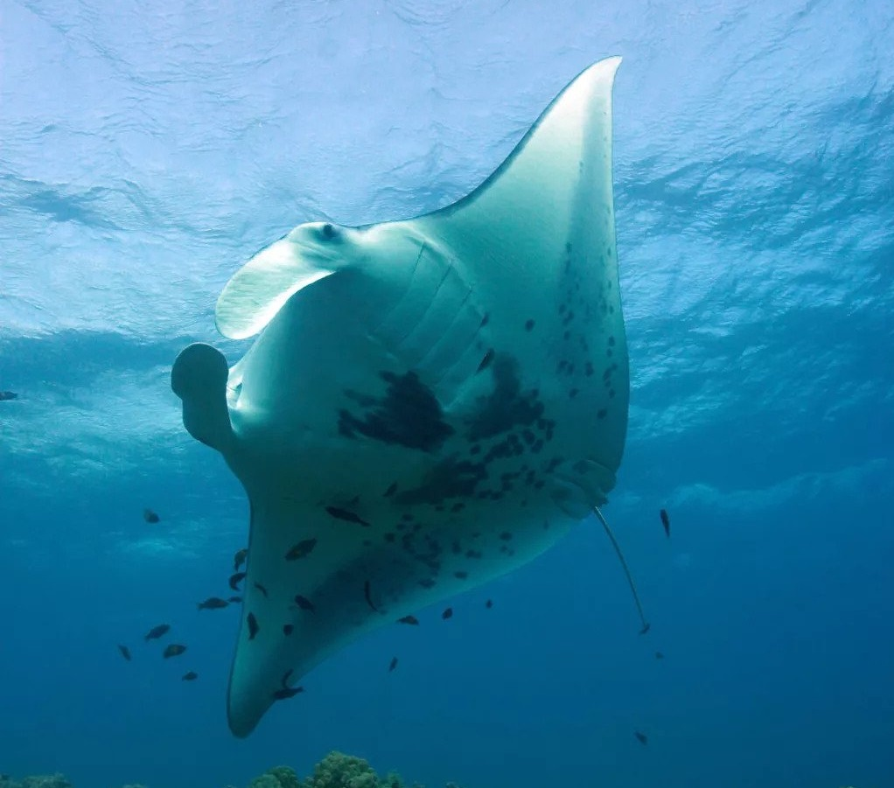
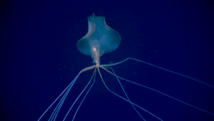

OUTER SPACE
Outer space, commonly shortened to space, is the expanse that exists beyond Earth and its atmosphere and between celestial bodies. Space is often described as a vacuum; devoid of matter or put simply empty. That is not entirely true though, as lots of things have clearly been seen in outer space, from galaxies and star systems, which consist of meteors, comets, and other planets, to the less visible systems of gas, dust, radiation, gravity, and a whole host of other things. Nevertheless, what is true is that space is mostly empty--so much of it is in fact nothing but cosmic voids.
|  |  |
| Deep Impact hits a comet | Moon landing and
a very, very distant Earth | Stars orbiting the black hole in
the center of our galaxy |
|---|
EXOSPHERE (10.000 km)
The outermost layer of earth's atmosphere, the exospheres is the part of the atmosphere that blends seamlessly into the vacuum of space. Found here are the majority of man-made satellites and spaceships that orbit Earth, and sometimes the upper parts of the ISS and auroras.
| |  |
| International Space Station (ISS) | Syncom satellite | Hubble Space Telescope |
|---|
THERMOSPHERE (700 km)
Taking its name from the Greek word thermos (meaning heat), the thermosphere is often aptly considered the "hot layer" because it contains the warmest temperatures in the atmosphere. The lower part of the thermosphere also notably contains the ionosphere, which is the part of the atmosphere ionized by solar radiation. Also found in here are the ISS, low-orbiting satellites, as well as auroras.
| | |
A pair of docked
Russian spaceships | Aurora Borealis | Satellite hovering over aurora |
|---|
MESOSPHERE (80 km)
Falling as low as −101 °C, the mesosphere is the coldest atmospheric layer surrounding the earth. Despite that, most meteors pass and burn through the mesophere. It is estimated that approximately 40 tons of meteors fall towards Earth each day, and the mesosphere is responsible for burning them up before they reach the earth and cause damage to its surface. As meteors burn up they can sometimes be seen in the night's sky, eventually known by most people as shooting stars.
STRATOSPHERE (50 km)
The stratosphere is most notable for containing the very important ozone layer, which protects Earth life from extremely harmful UV rays and radiation emitted by the sun. Also found here are most commercial aircrafts, jets, weather balloons, and occasionally even birds.
| | |
| Weather balloons | Swans flying above the clouds | Airplane window view |
|---|
TROPOSPHERE (12 km)
The layer of the atmosphere closest to Earth’s surface, the troposphere contains 99.99% of life as we know it. It is the region where weather occurs, clouds are formed, helicopters and light aircrafts are typicially flown, and humans alongside other animals live in.
|  | |
| Helicopter | Aurora 7 | Lightning storm over
the Great Sand Dunes |
|---|
Land
Land is the solid surface of Earth that is not permanently submerged in water. Most but not all land is situated at elevations above sea level (variable over geologic time frames) and consists mainly of crustal components such as rock, sand, soil, and sometimes ice. Earth's total planimetric (flat) land area is approximately 148,939,063.133 km2 which is about 29.2% of its total surface. The vast majority of human activity throughout history has occurred in land areas that support agriculture, habitat, and various natural resources. Some life forms, including terrestrial plants and terrestrial animals, have developed from predecessor species that originated in bodies of water.
 | | |
| Mother Nature | Human Civilization | Flora & Fauna |
|---|
EPIPELAGIC ZONE (200 m deep)
The epipelagic zone, also known as photic zone, euphotic zone, or sunlight zone, is the uppermost layer of the ocean. It is the layer that receives the most sunlight, allowing phytoplankton to perform photosynthesis. The epipelagic zone is home to the majority of aquatic life.
 | |  |
| Dolphins | Diver swims next to a whale shark,
the world's largest fish. | Manta Ray |
|---|
MESOPELAGIC ZONE (1.000 m)
Known also as the twilight zone or the midwater zone, the mesopelagic zone extends from 200 meters to 1,000 meters below the surface of the ocean. The light that penetrates to this depth is extremely faint, making it impossible for photosynthetic organisms to survive. Conversely, the mesopelagic zone is where we begin to see the twinkling lights of bioluminescent creatures. A great diversity of strange and bizarre fishes can be found here.
 | | |
| Swarm of fish | View from inside a submarine | Bioluminescent jellyfish |
|---|
BATHYPELAGIC ZONE (4.000 m)
The bathypelagic zone, also known as the midnight zone, is the zone that extends from 1,000 meters down to 4,000 meters. This zone is so dark that no light penetrates it whatsoever, rendering it pitch black and lit only on occasion by bioluminescent organisms. There is no living plant life, not even phytoplankton. The water pressure at this depth is immense, reaching 5,850 pounds per square inch. In spite of the pressure, a surprisingly large number of creatures can be found here. Inhabitants of this cold, dark environment include the elusive giant squid, various octopi, bioluminescent jellyfish, anglerfish and hatchetfish. Sperm whales will occasionally enter this zone to hunt for giant squid, but they eventually return to the mesopelagic and epipelagic zones.
|  | | |
| A bigfin squid swims in the deep sea. | The wreck of the RMS Titanic | Gammarus roeseli,
a species of freshwater amphipod |
|---|
ABYSSOPELAGIC ZONE (6.000 m)
The abyssopelagic zone extends from 4.000 to 6.000 m down to the seafloor or abyssal plain. Animals that can withstand the pressures in this depth, which can reach up to 600 times what is experienced at sea level are highly specialized. Tripod fish are an oddity that can be found in this zone. Often found resting on the seafloor, tripod fish can pump fluid into their elongated fins to make them like rigid stilts (or as their name implies, a tripod), sometimes a few feet high. Rattail fish, octopuses, and sea cucumbers are also well adapted to the intense pressure here.
| < |
| A bioluminescent "fireworks" jellyfish | A sea cucumber drifts in the deep sea. |
|---|
HADOPELAGIC ZONE (11.000 m)
The hadal zone, also known as the hadopelagic zone, is the deepest region of the ocean, lying within oceanic trenches. The hadal zone extends from 6,000 meters (19,686 feet) to the bottom of the deepest parts of the ocean. The deepest ocean trenches are considered the least explored and most extreme marine ecosystems. They are characterized by complete lack of sunlight, low temperatures, nutrient scarcity, and extremely high hydrostatic pressures. Most organisms found here are scavengers and detritivores. Over 400 species are currently known from hadal ecosystems, many of which possess physiological adaptations to the extreme environmental conditions. There are high levels of endemism, and noteworthy examples of gigantism in amphipods, mysids, and isopods and dwarfism in nematodes, copepods, and kinorhynchs. The deepest point in the ocean is located in the Mariana Trench off the coast of Japan at 10,984 meters.
| | |
| A beautiful stalked crinoid | Grenadiers, the most abundant deep-sea fish | Fish eat fish |
|---|
Crust (35 km)
Aside from being outermost layer of Earth, the crust is also the thinnest and the most rudimentary layer that makes up the earth. The earth’s crust, or surface to be specific, can be divided into 15 principal tectonic plates. These tectonic plates are also split into two types: the oceanic crust that forms Earth's oceans, and the continental crust that makes up the land on Earth. The oceanic crust is made mostly of basalt- a dark, dense rock made mostly of metals. The continental crust is made mostly of granite- a lighter, less dense rock, composed primarily of silicon and oxygen. The continental crust is much thicker and less dense, while the oceanic crust is much thinner and very dense. These plates are moved around by the convection currents within the mantle, albeit very, very slowly. When the oceanic and continental crusts are pushed together, the oceanic crust is forced below, because of its high density. These movements of the tectonic plates are the cause of geological activity, such as mountains, volcanoes, and earthquakes. The crust--and the extreme upper mantle, which moves with the crust--is often referred to as the lithosphere.
Mantle (2.890 km)
The mantle is the thickest layer of Earth, making up about 82% of its volume. The mantle lies between the earth's crust and its dense, super-heated core. The mantle is composed primarily of heavy metals, such as iron, nickel, magnesium, and others. However, mantle material behaves like a viscous fluid over long geological timescales and plays a part in the dynamic nature of Earth's ridged outer layer. It is divided into several layers: the upper mantle, the transition zone, the lower mantle, and D” (D double-prime), the strange region where the mantle meets the outer core. It can also be divided into the asthenosphere and lithosphere.
Core (6.370 km)